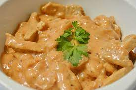

Brazilian Chicken Stroganoff

Brazilian Chicken Stroganoff is a delicious classic!
Ingredients
- 3 Chicken breast sliced in small cubes
- 1 minced garlic clove
- salt and peper to taste
- 1 sliced onion
- 1 spoon of mayo
- 1 spoon of butter
- 1/2 cup of ketchup
- 1/3 cup of mustard
- 1 cup of milk cream
- potato sticks to taste
Steps Guide
- In a pan, mix the Chicken, onion, mayo salt and peper
- in a big frying pan, melt the butter and bown the onion
- mix it with the chicken until its brown
- blend it with the ketchup and mustard
- pour the milk cream together, and take it out the fire, befor it boils
And thats it, it's done, enjoy!